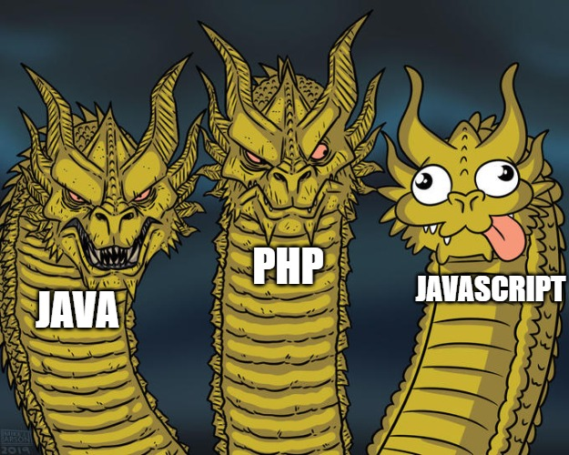

ELECTIVE 4 - WEB DEVELOPMENT
PHP has been around for a while and has a reputation for being a complex and outdated programming language compared to newer languages like Python and versatile language like Java. However, PHP is still a widely-used language for web development, and it has a lot to offer when it comes to creating dynamic and interactive websites.
While learning PHP on my own, I struggled to understand its syntax and struggled with its seemingly outdated features. But in Elective 4 - Web Development with Professor Robert Justin Chavez, who helped me see the potential of PHP and appreciate its strengths. Professor Chavez's explanations were clear and concise, and he provided hands-on examples that made it easier for me to grasp the language's nuances.
Through the subject, I discovered that PHP can simplify web development tasks by providing powerful built-in functions for tasks like working with databases and handling user input. Additionally, PHP has a large and active community that creates a wide range of libraries and frameworks that can make web development even easier and more efficient.
Ultimately, Professor Chavez's enthusiasm for PHP was contagious, and I gained a new appreciation for the language. PHP may not be the newest or trendiest language out there, but it still has a lot to offer when it comes to building robust and scalable web applications.